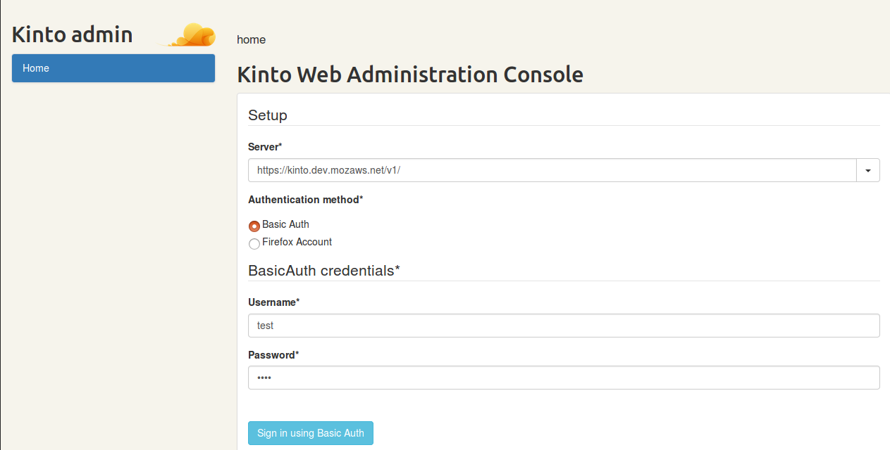

Kinto Web Administration Console¶
{kind=link}
A Web admin UI to manage data from a Kinto https://kinto.readthedocs.io/ server: Demo http://kinto.github.io/kinto-admin/. kinto-admin wants to be the pgAdmin http://pgadmin.org/ for Kinto. You can also use it to build administration interfaces for Kinto-based systems.
Kinto-Admin is used at Mozilla and released under the Apache v2 licence.
Why use Kinto-admin?¶
- Expose your data over an HTTP interface, unlike databases like PostgreSQL
- Use simple HTTP requests rather than SQL
- Use Kinto.js to easily implement offline first clients
- Choose the database you want from those that Kinto supports, and use a unified API to access its data
- Manage your data using the handy admin UI
- Easily set up live push notifications for live updates of your application
- Make it possible to share data between users (using fine-grained permissions)
- Take advantage of schema validation if you need it
- Track changes on your application data
Prerequisites¶
NodeJS v4+ and npm 2.14+ should be installed and available on your machine.
Installation¶
If you plan on contributing, this is the way to go! This will install every necessary packages to run the tests, build the documentation etc.
The easiest way to get started is to install *create-react-app* first:
$ npm install -g create-react-app
$ create-react-app test-kinto-admin && cd test-kinto-admin
$ npm install kinto-admin --save-dev
Then, import and render the main KintoAdmin component in the generated src/index.js file:
import React from "react";
import ReactDOM from "react-dom";
import KintoAdmin from "kinto-admin";
ReactDOM.render(
<KintoAdmin />,
document.getElementById("root")
);
How to run Server¶
To run a local development server:
$ npm start
To build the admin as a collection of static assets, ready to be hosted on a static webserver:
$ npm run build
This will generate production-ready assets in the build folder.
Admin settings¶
The KintoAdmin component accepts a settings prop, where you can define the following options: - maxPerPage: The max number of results per page in lists (default: 200).
Example:
import KintoAdmin from "kinto-admin";
ReactDOM.render(
<KintoAdmin settings={{maxPerPage: 42}}/>,
document.getElementById("root")
);
Plugins¶
Note
It is possible to extend the default Kinto behaviors by using _plugins_. To enable admin plugins, import and pass them as a plugins prop to the KintoAdmin component:
import KintoAdmin from "kinto-admin";
import * as signoffPlugin from "kinto-admin/lib/plugins/signoff";
ReactDOM.render(
<KintoAdmin plugins={[signoffPlugin]}/>,
document.getElementById("root")
);
Build customization¶
Building for relative paths -By default, Create React App produces a build assuming your app is hosted at the server root. -To override this, specify the homepage in your package.json, for example:
"homepage": "http://mywebsite.com/relativepath",
-This will let Create React App correctly infer the root path to use in the generated HTML file.
Hacking on kinto-admin¶
Clone repository:
$ git clone https://github.com/Kinto/kinto-admin.git
Install packages:
$ cd kinto-admin && npm install
After installation of packages, run the development server.
Development server¶
The development server should only be used when working on the kinto-admin codebase itself. If you’re evaluating kinto-admin, or building a system that relies on kinto-admin to administer, you should install kinto-admin using npm and use it as above.
To run in development mode:
$ npm start
The application is served at localhost:3000 http://localhost:3000/, and any React component update will trigger a hot reload.
Tests¶
To run tests:
$ npm run test-all
Note
The browser test suite is not included in this command as it takes a long time and may result in intermittent failures on Travis see :[#146] https://github.com/Kinto/kinto-admin/pull/146.
Browser tests¶
The browser test suite uses _NightmareJS_ <http://www.nightmarejs.org/> and _Electron_ <http://electron.atom.io/> To run browser tests:
$ npm run dist
$ npm run test-browser
To show the browser interactions while running them, set the NIGHTMARE_SHOW env var:
$ NIGHTMARE_SHOW=1 npm run test-browser
There’s also a TDD mode:
$ npm run tdd-browser
FAQ¶
BROWSER SUPPORT Let’s be honest, we’re mainly testing kinto-admin on recent versions of Firefox and Chrome, so we can’t really guarantee proper compatibility with IE, Safari, Opera and others. We’re accepting Pull-Requests https://github.com/Kinto/kinto-admin/pulls though.
How to display a nested field value using the collection displayFields property? Use the dot notation.
For example, if you have the following record:
{
"data": {
"attachment": {
"filename": "font.ttf"
}
}
}
You can use attachment.filename.
We tried our best to make it work with properties having dots in their name.
For instance:
{
"data": {
"target": {
"proof.hash": "abcd",
"merkle.tree": {
"file.name": "foobar"
}
}
}
}
If you use target.merkle.tree.file.name it will render the string foobar and target.proof.hash will render abcd.
License¶
Apache Licence Version 2.0
See our tutorials for more in-depth information on these topics.